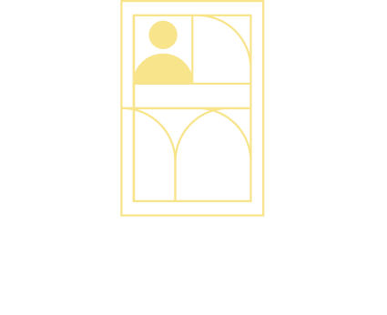
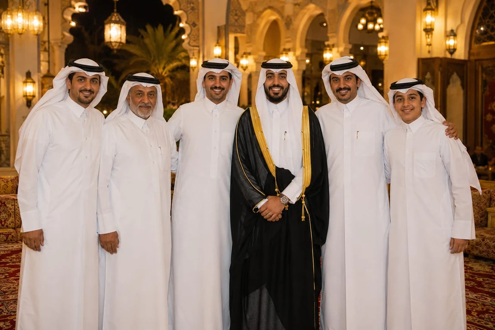
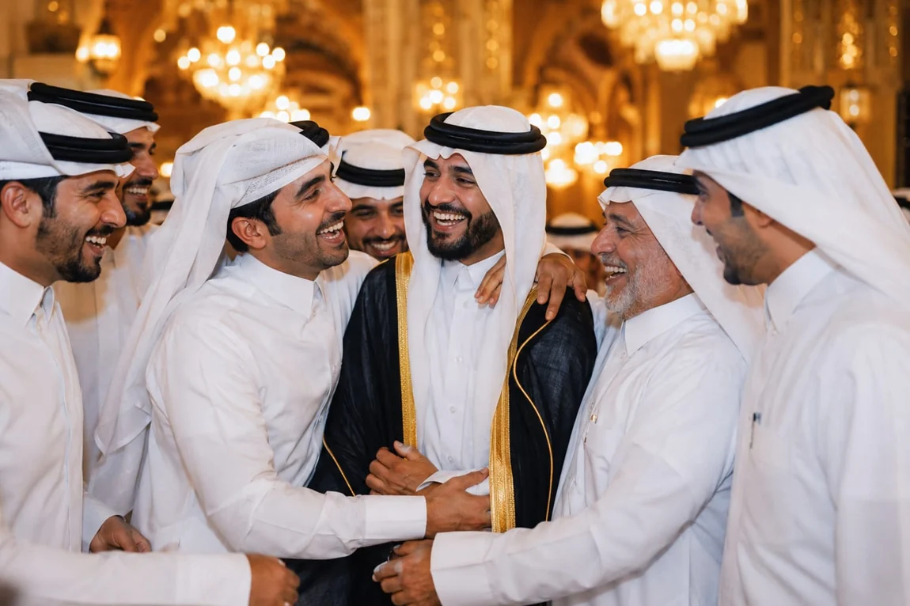
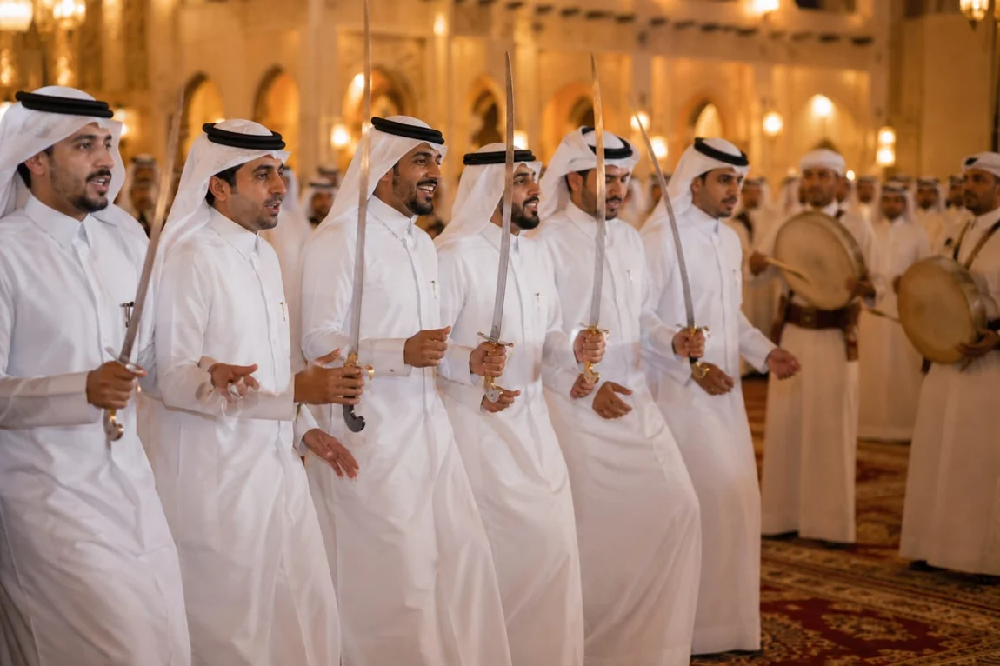

Recognition and retrieval
InsightFace generates face embeddings; FAISS searches them within an event. The implementation keeps event indexes separate and uses a bounded cache so indexes do not accumulate indefinitely in memory.

Startup / AI product development
An event can leave you with thousands of photos to search. I built FraMee to find the photos you appear in, and the video moments worth keeping.



A prepared gallery example. This page illustrates the product; it does not perform face recognition.
Photos and video share the same identity-matching foundation. The processing around it changes with the medium.
The organizer uploads a photo archive. A background indexing pipeline processes it once and stores a separate face-search index for that event.
The engineering behind the experience
InsightFace generates face embeddings; FAISS searches them within an event. The implementation keeps event indexes separate and uses a bounded cache so indexes do not accumulate indefinitely in memory.
A sparse pass locates candidate appearances. Matching segments are grouped, a denser pass identifies useful moments, and FFmpeg cuts the resulting clips. Cached detections support subsequent searches against the same video.
A Next.js application connects a studio dashboard to shareable event pages. Organizers manage uploads and galleries; guests enter through an event link or QR code and use reference photos to find their own media.
Containerized FastAPI services and indexing jobs support Google Cloud storage and processing. Organizer mutations require ownership; guest matching uses the event’s sharing capability. Photo URLs are signed rather than exposed as guessable identifiers.
Beyond research
FraMee brings computer vision into a workflow people can use: upload an event, share access, find a person’s media, and deliver a gallery or highlight clips. The work spans the recognition pipeline and the product around it.